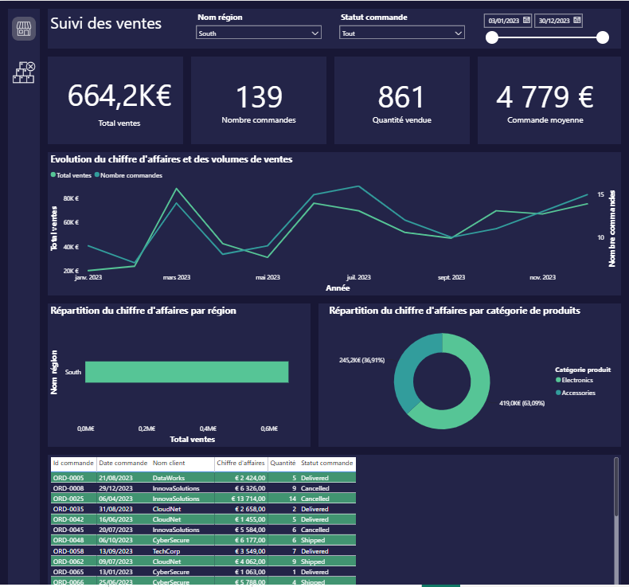
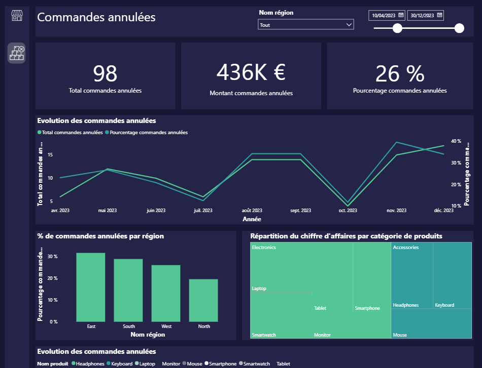

Dashboard de suivi des ventes avec Power BI
Transformer des données commerciales brutes en outil de pilotage stratégique.
Ce projet consiste à transformer un fichier CSV contenant des données de ventes et de commandes en un dashboard Power BI interactif. L’objectif est de permettre une lecture rapide des performances commerciales et d’identifier les principaux leviers d’action.
Objectif du projet
L’objectif était de construire une interface visuelle intuitive permettant de suivre le chiffre d’affaires, le nombre de commandes, les quantités vendues et la commande moyenne.
Le dashboard permet également d’analyser les performances selon la région, le statut des commandes et la période sélectionnée.
Indicateurs clés

- Création d’un KPI sur le chiffre d’affaires total.
- Suivi du nombre de commandes et des quantités vendues.
- Calcul de la commande moyenne.
- Analyse de l’évolution des ventes au cours de l’année.
- Utilisation de filtres interactifs par région, statut de commande et période.
Analyse des commandes annulées
Une analyse complémentaire a été réalisée pour étudier les commandes annulées selon les régions, les produits et les périodes.
Cette analyse permet d’identifier les zones nécessitant une attention particulière et de mieux comprendre les facteurs pouvant influencer la performance commerciale.

Compétences mobilisées
- Importation et préparation des données avec Power Query.
- Création de mesures et d’indicateurs avec DAX.
- Conception d’un dashboard interactif avec Power BI.
- Analyse des performances commerciales.
- Présentation des résultats pour faciliter la prise de décision.